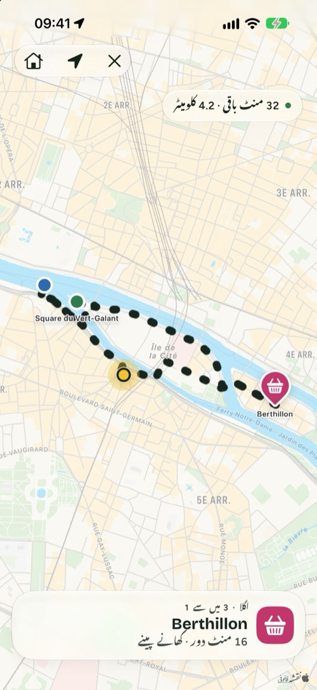
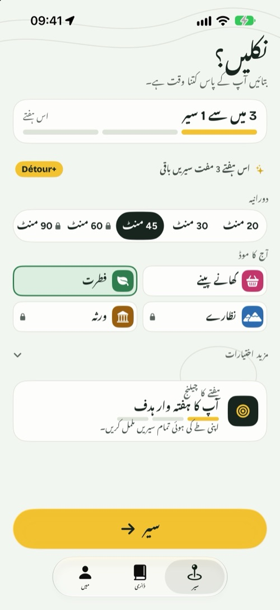
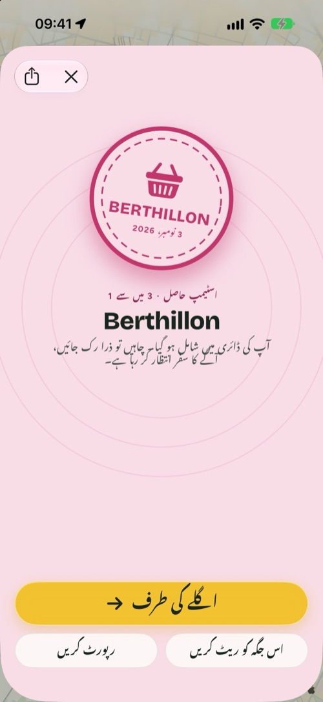
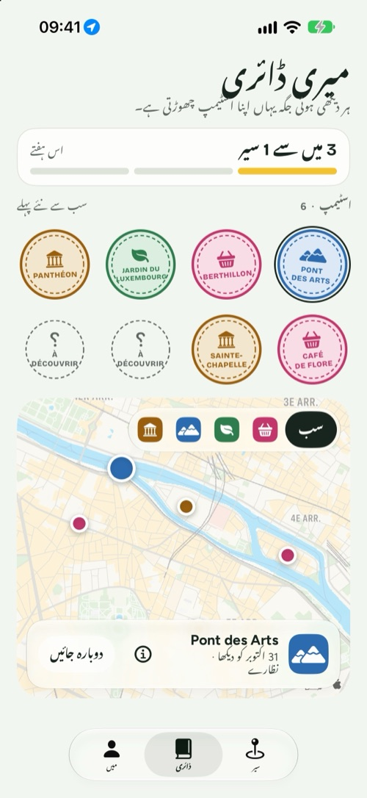

Détour
بتائیں آپ کے پاس کتنا وقت ہے، میں آپ کو سیر پر نکلنے کی ایک اچھی وجہ دوں گا۔
iPhone، iPad اور iPhone Duo کے لیے · مفت، اختیاری Détour+ کے ساتھ

تین انتخاب، اور آپ باہر۔
Détour آپ کو یہ نہیں بتاتا کہ الف سے ب تک کیسے جانا ہے۔ وہ آپ کو جانے کی ایک وجہ دیتا ہے، پھر آپ کو گھر واپس لے آتا ہے۔
آپ کا وقت
20، 30، 45 منٹ یا اس سے زیادہ۔ چکر آپ کی جگہ سے شروع ہو کر وہیں واپس آتا ہے۔
آپ کا موڈ
کھانے پینے، فطرت، نظارے یا ورثہ: راستے میں 2 سے 4 اصل جگہیں جہاں آپ پہنچتے ہیں۔
چل پڑیں
راستے پر چلتے رہیں۔ ہر جگہ جہاں آپ پہنچیں خود بخود درج ہو جاتی ہے اور آپ کی ڈائری میں ایک اسٹیمپ چھوڑتی ہے۔
چلنے کے بہانے، سیاحتی دورے نہیں۔
ایک سیر، چار اسکرینوں میں۔



بند ہو تو ہاتھ میں، کھلا ہو تو نقشے پر۔
- بند ہونے پر بیرونی اسکرین پر بنیادی چیزیں: وقت، موڈ اور «چلیں»۔
- کھلنے پر ایک طرف سیٹنگز اور دوسری طرف بنتا ہوا راستہ۔
- سرپرائز موڈ: اگلی جگہیں راستے میں سامنے آتی ہیں۔
- چلتے وقت اگلی جگہ اور فاصلہ لاک اسکرین اور Dynamic Island پر نظر آتے رہتے ہیں۔
- ہفتہ وار ہدف، بیج، ہر ہفتے نیا چیلنج، اور چاہیں تو ہر سیر Apple صحت میں محفوظ کرنے کی سہولت۔

عادت بنانے کے لیے مفت۔ اور آگے جانے کے لیے Détour+۔
لامحدود سیریں، چاروں موڈ، 90 منٹ تک کے راستے جن میں زمین کی قسم بھی چنی جا سکتی ہے، اور سرپرائز موڈ۔
سالانہ
ہر سالآزمائشی مدت کے ساتھ سالانہ سبسکرپشن
ماہانہ
ہر مہینہکسی پابندی کے بغیر
تاحیات
ایک بارایک ہی ادائیگی، ہمیشہ کے لیے
مفت: ہفتے میں 3 سیریں، فطرت اور کھانے پینے کے موڈ، 45 منٹ تک، ڈائری اور بیج کے ساتھ۔ قیمتیں ملک کے مطابق مختلف ہوتی ہیں اور App Store میں نظر آتی ہیں۔ سبسکرپشن آپ کے Apple اکاؤنٹ کی سیٹنگز سے سنبھالی اور منسوخ کی جاتی ہے۔
آپ کی سیر آپ پر نظر نہیں رکھتی۔
نہ کچھ بنانا، نہ کچھ یاد رکھنا۔ آپ کی ڈائری آپ کے iPhone پر رہتی ہے۔
راستہ بنانے اور جگہوں کی تصدیق کے لیے، صرف سیر کے دوران استعمال ہوتی ہے۔
اشتہاری ٹریکرز نہیں ہیں۔ تفصیل رازداری کی پالیسی میں دیکھیں۔